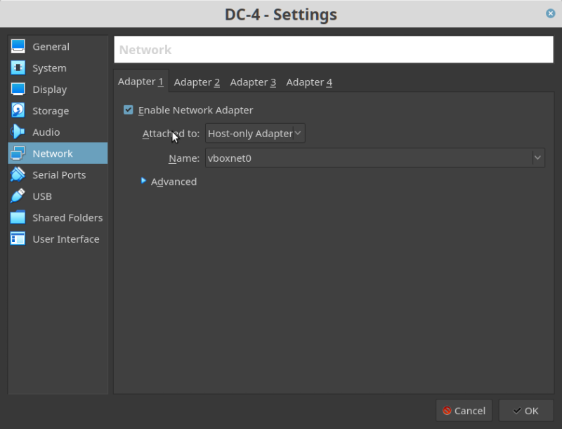
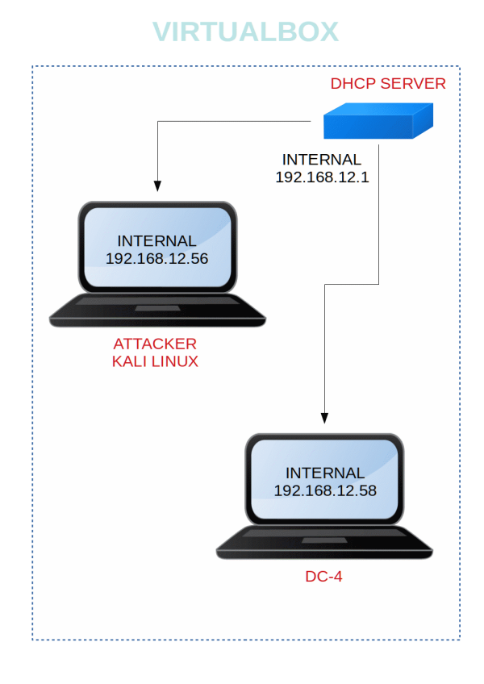

DC-4
▸ DC-4
▸ 1. Scan Network
▸ 2. Finding Services and Ports
▸ 3. Enumerate
▸ 3.1 Port 80
▸ 3.1.1 Configure BurpSuite
▸ 3.1.2 Brute force the login page
▸ 3.1.3 Run commands
▸ 3.1.4 Check /home directory
▸ 3.1.5 Brute force ssh with hydra
▸ 4. Lateral moment
▸ 5. Privilege Escalation
▸ 6. Root and flag
Difficulty: Beginner.
Flag: 1 flag.
Learning:
• Discovering Targets IP.
• Network scanning (Nmap).
• Surfing HTTP service port.
• HTTP Login credential Bruteforce (Burpsuite).
• Command Injection.
• SSH Login Credentials Bruteforce (Hydra).
• Logging into SSH and Enumerating Directories.
• Obtain credentials in /var/mail directory.
• Check Sudo rights.
• Adding new user /etc/passwd with sudo
• Access root directory.
• Capture the flag.
Download: http://www.five86.com/downloads/DC-4.zip
Download (Mirror): https://download.vulnhub.com/dc/DC-4.zip
Download (Torrent): https://download.vulnhub.com/dc/DC-4.zip.torrent
Install the machine on VirtualBox:
1. Download the file and extract it.
2. On Virtualbox choose File->Import Appliance.
3. Select the file “ova”.
4. Accept to import.


Watch your Machine IP.

Diagram
 Index
Index